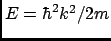
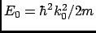
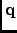
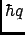

Next: Dynamic Coherent Structure Factor
Up: The Scattering menu
Previous: The Scattering menu
Contents
Introduction
The quantity of interest in neutron scattering experiments with thermal neutrons is the dynamic structure factor,
, which is closely related to the double differential cross-section [7],
. The double differential cross section is defined as the number of neutrons which
are scattered per unit time into the solid angle interval
![$[\Omega,\Omega+d\Omega]$](img391.gif) and into the energy interval [E,E+dE].
It is normalized to , dE, and the flux of the incoming neutrons,
and into the energy interval [E,E+dE].
It is normalized to , dE, and the flux of the incoming neutrons,
Here N is the number of atoms, and
and
are the wave numbers of scattered and
incident neutrons, respectively. They are related to the corresponding neutron energies by
 and
, where is the neutron mass. The arguments of the dynamic structure
factor, q and  , are the momentum and energy transfer in units of , respectively:
, are the momentum and energy transfer in units of , respectively:
|  |
 |
|
(4.131) |
|
|
|
(4.132) |
The modulus of the momentum transfer can be expressed in the scattering angle  , the energy transfer, and the energy of
the incident neutrons:
, the energy transfer, and the energy of
the incident neutrons:
The dynamic structure factor contains information about the structure and dynamics of the scattering system [67].
It can be written as
![\begin{displaymath}
{\cal S}({\bf q},\omega) = \frac{1}{2\pi}\int_{-\infty}^{+\infty}dt \exp[-i\omega t]{\cal F}({\bf q},t).
\end{displaymath}](img406.gif) |
(4.134) |
 is called the intermediate scattering function and is defined as
is called the intermediate scattering function and is defined as
|
|
|
(4.135) |
|
|
|
(4.136) |
The operators
in Eq. (4.135) are the position operators of the nuclei in the sample.
The brackets
 denote a quantum thermal average and the time dependence of the position operators
is defined by the Heisenberg picture. The quantities are the scattering lengths of the nuclei which depend
on the isotope and the relative orientation of the spin of the neutron and the spin of the scattering nucleus. If the
spins of the nuclei and the neutron are not prepared in a special orientation one can assume a random relative orientation
and that spin and position of the nuclei are uncorrelated. The symbol
denote a quantum thermal average and the time dependence of the position operators
is defined by the Heisenberg picture. The quantities are the scattering lengths of the nuclei which depend
on the isotope and the relative orientation of the spin of the neutron and the spin of the scattering nucleus. If the
spins of the nuclei and the neutron are not prepared in a special orientation one can assume a random relative orientation
and that spin and position of the nuclei are uncorrelated. The symbol
 appearing in
appearing in
 denotes an average over isotopes and relative spin
orientations of neutron and nucleus.
denotes an average over isotopes and relative spin
orientations of neutron and nucleus.
Usually one splits the intermediate scattering function and the dynamic structure factor into their coherent and
incoherent parts which describe collective and single particle motions, respectively.
Defining
|
|
 |
(4.137) |
|
|
|
(4.138) |
the coherent and incoherent intermediate scattering functions can be cast in the form
Rewriting these formulas, nMOLDYN introduces the partial terms as:
|
|
|
(4.141) |
|
|
|
(4.142) |
where:
|
|
|
(4.143) |
|
|
|
(4.144) |
where  ,
,  ,
,  ,
and
are defined in
Section 4.2.1.
,
and
are defined in
Section 4.2.1.
The corresponding dynamic structure factors are obtained by performing the Fourier transformation defined in
Eq. 4.134.
An important quantity describing structural properties of liquids is the static structure factor, which
is defined as
In the classical framework the intermediate scattering functions are interpreted as classical time correlation functions.
The position operators are replaced by time-dependent vector functions and quantum thermal averages are replaced by classical
ensemble averages. It is well known that this procedure leads to a loss of the universal detailed balance relation,
and also to a loss of all odd moments
The odd moments vanish since the classical dynamic structure factor is even in , assuming invariance of the scattering
process with respect to reflections in space. The first moment is also universal. For an atomic liquid, containing only one
sort of atoms, it reads
where is the mass of the atoms. Formula (4.148) shows that the first moment is given by the average kinetic
energy (in units of ) of a particle which receives a momentum transfer
. Therefore
is called the recoil moment. A number of `recipes' has been
suggested to correct classical dynamic structure factors for detailed balance and to describe recoil effects in an
approximate way. The most popular one has been suggested by Schofield [68]
One can easily verify that the resulting dynamic structure factor fulfills the relation of detailed balance. Formally, the
correction (4.149) is correct to first order in . Therefore it cannot be used for large q-values which
correspond to large momentum transfers . This is actually true for all correction methods which have suggested so far.
For more details we refer to Ref. [9].
Next: Dynamic Coherent Structure Factor
Up: The Scattering menu
Previous: The Scattering menu
Contents
pellegrini eric
2009-10-06